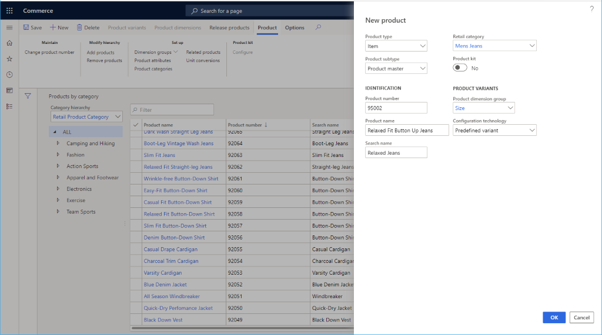
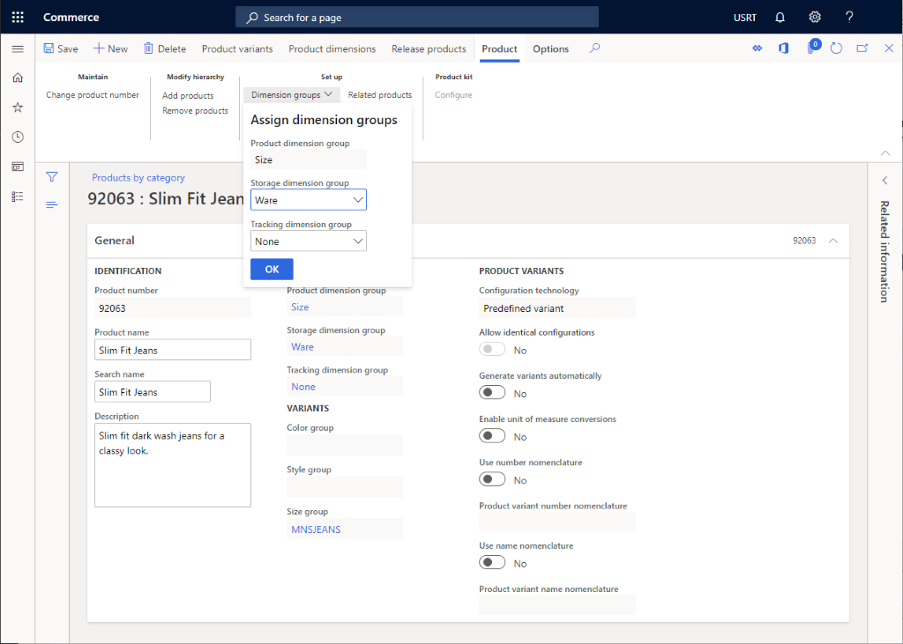
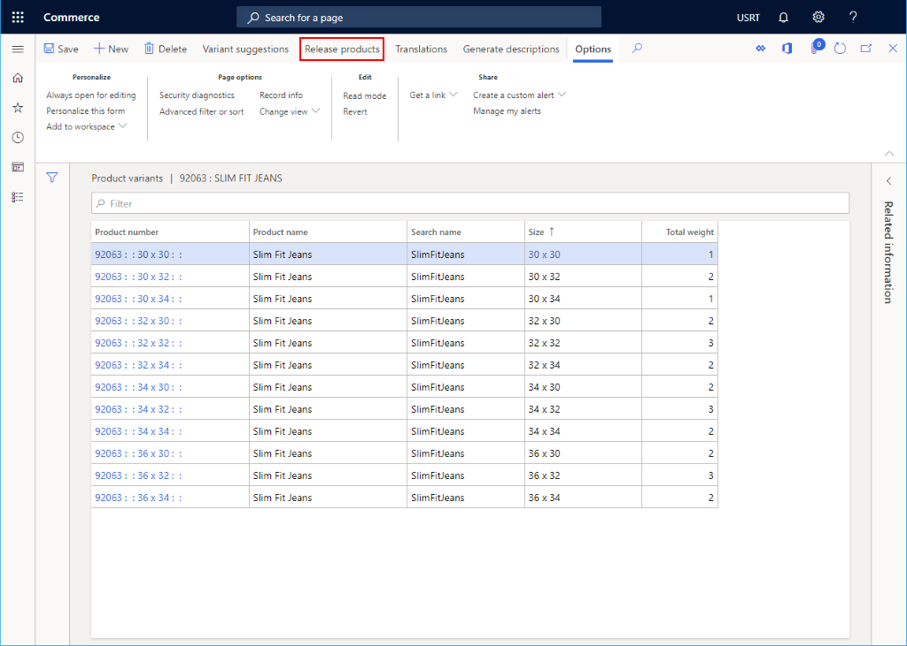
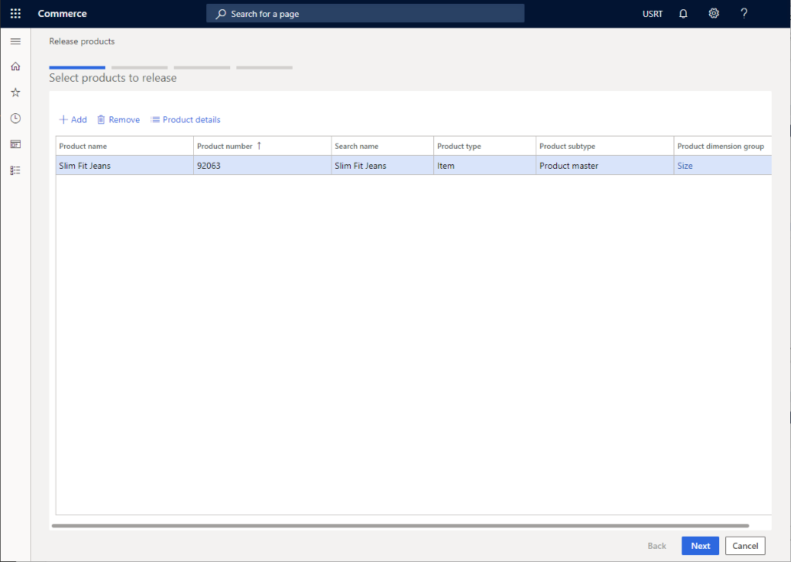
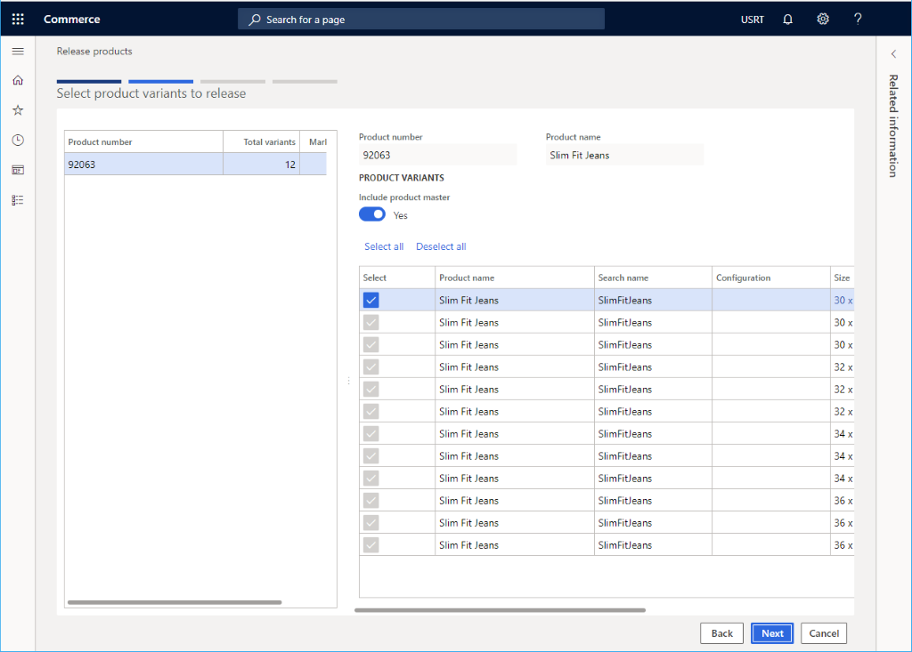
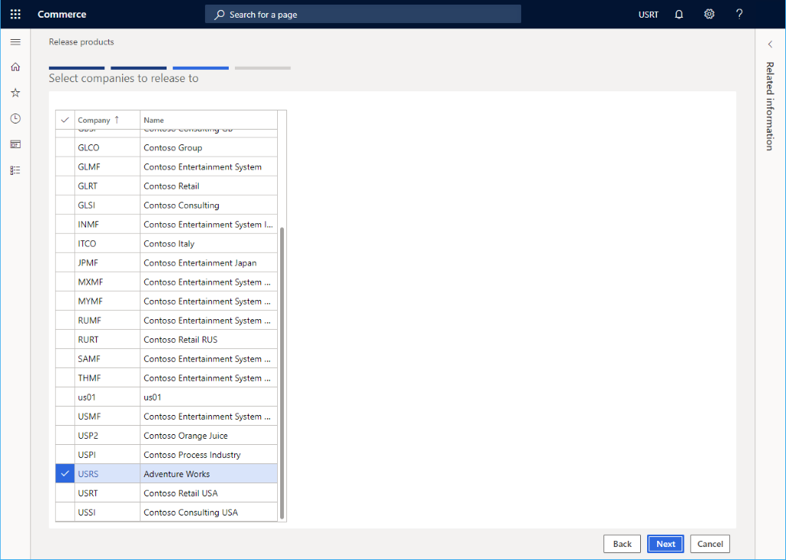
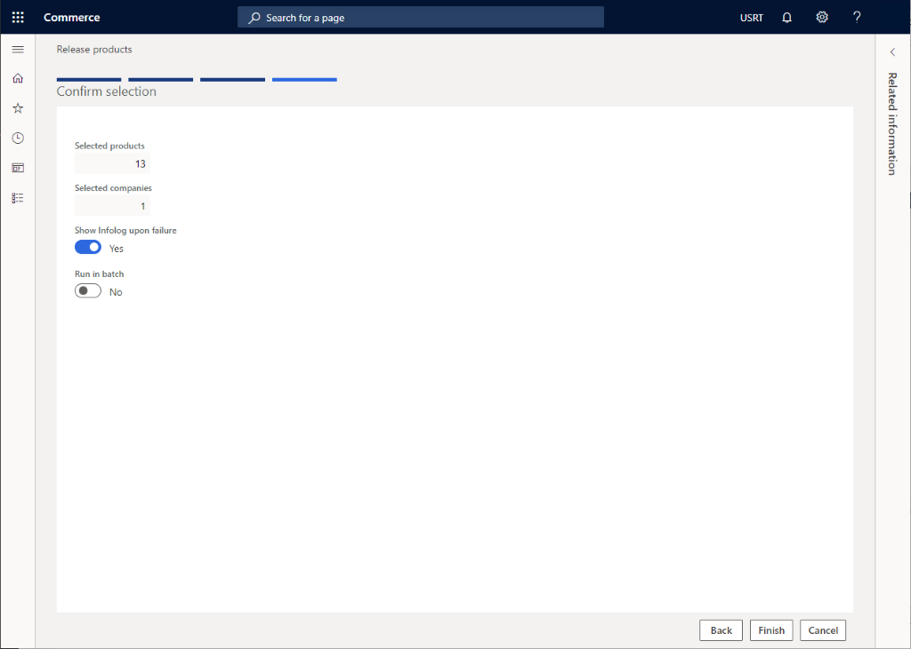
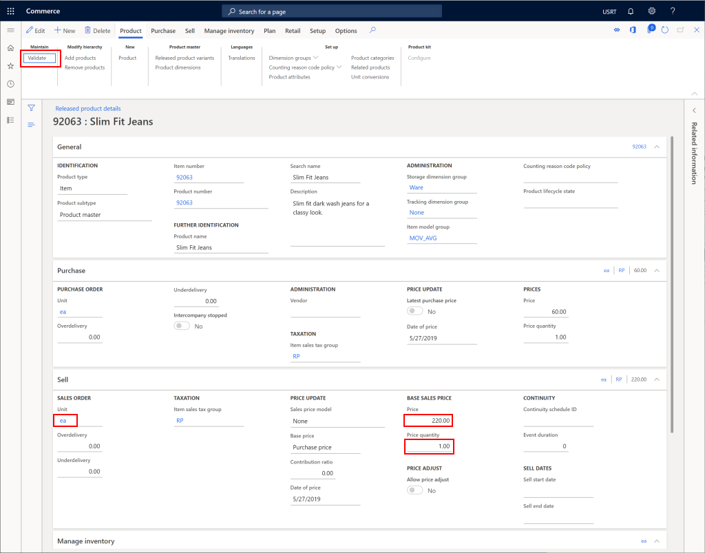

Ein neues Produkt in Commerce erstellen
Important
Dynamics 365 Retail ist jetzt Dynamics 365 Commerce und bietet umfassende Handelsfunktionen für alle Kanäle – von E-Commerce über Shops bis hin zu Callcentern. Weitere Informationen zu diesen Änderungen finden Sie unter Microsoft Dynamics 365 Commerce.
In diesem Thema wird beschrieben, wie Sie ein neues Produkt in Microsoft Dynamics 365 Commerce erstellen.
Übersicht
Ein Produkt wird hauptsächlich durch eine Produktnummer, einen Namen und eine Beschreibung definiert. Es sind jedoch auch andere Daten erforderlich, ein Produkt oder einen Service zu beschreiben:
Neues Produkt erstellen
- Gehen Sie im Navigationsbereich zu Module > Retail und Commerce > Produkte und Kategorien > Freigegebene Produkte nach Kategorie.
- Wählen Sie im Aktivitätsbereich Neu aus.
- Wählen Sie in der Dropdownliste Produktart entweder Artikel oder Dienstleistung aus.
- Wählen Sie in der Dropdownliste Produktuntertyp entweder Produkt (wenn das Produkt keine Varianten hat) oder Produktmaster (wenn das Produktvarianten haben wird) aus.
- Geben Sie in das Feld Produktnummer eine Produktnummer ein, falls diese noch nicht vorbelegt ist.
- Geben Sie in das Feld Produktname einen Produktnamen ein.
- Geben Sie in das Feld Suchbegriff einen Suchbegriff ein.
- Wählen Sie in der Dropdownliste Einzelhandelskategorie eine entsprechende Kategorie aus.
- Wenn das Produkt ein Set ist, wählen Sie Ja für Produktset.
- Wenn der Produktuntertyp Produktmaster ist, legen Sie die Produktdimensionsgruppe fest, um die unterstützten Varianten einzuschließen. Zu den Optionen zählen Farbe, Größe, Stil und Konfiguration. Bei Bedarf müssen Sie möglicherweise zusätzliche Produktdimensionsgruppen erstellen.
- Wählen Sie in der Dropdownliste Konfigurationstechnologie eine entsprechende Option aus.
- Wählen Sie OK.
Das folgende Bild zeigt das Beispiel eines hinzugefügten Produkts.

Sobald ein Produkt hinzugefügt wurde, können zusätzliche Daten dafür festgelegt werden, zum Beispiel Produktbeschreibung, Variantengruppen, Dimensionsgruppen, Produkteigenschaften und Verwandte Produkte.
Das folgende Bild zeigt die zusätzlichen Details eines Produkts.

Produktvarianten erstellen
Wenn der Produktuntertyp Produktmaster ist, müssen bestimmte Varianten angelegt werden.
Gehen Sie folgendermaßen vor, um ein Produktvarianten zu erstellen.
- Wählen Sie im Aktivitätsbereich Produktvarianten.
- Wenn im Aktionsbereich Variantengruppen ausgewählt wurden, wählen Sie *Variantenvorschläge.
- Wählen Sie die Varianten aus, die Sie für das Produkt unterstützen möchten.
- Wählen Sie Erstellen aus.
Freigeben eines Produkts
Um ein Produkt zu verkaufen, muss es zunächst an eine juristische Person freigegeben werden.
Wählen Sie auf der Produktseite Produkte freigeben.

Wählen Sie das freizugebende Produkt und anschließend Nächste aus.

Wählen Sie die freizugebende Produktsatzvarianten und anschließend Nächste aus.

Wählen Sie die juristische Person und dann Nächste aus.

Wählen Sie Fertig stellen aus.

Ein freigegebenes Produkt konfigurieren
Sobald ein Produkt freigegeben ist, ist eine weitere Konfiguration erforderlich, die das Hinzufügen eines Preises zum Produkt umfasst.
- Gehen Sie im Navigationsbereich zu Module > Retail und Commerce > Produkte und Kategorien > Freigegebene Produkte nach Kategorie.
- Wählen Sie den Produktkategorieknoten für das freigegebene Produkt aus und wählen Sie das Produkt aus der Produktliste aus.
- Wählen Sie im Aktionsbereich Bearbeiten aus.
- Konfigurieren Sie im Abschnitt Kauf alle erforderlichen Eigenschaften, einschließlich Einheit, Preis und Menge.
- Wählen Sie im Aktionsbereich Bestätigen, um sicherzustellen, dass für fehlende Felder keine Fehler gemeldet werden.
- Wählen Sie im Aktionsbereich Speichern aus.
Das folgende Bild zeigt eine Beispielkonfiguration für ein freigegebenes Produkt.
